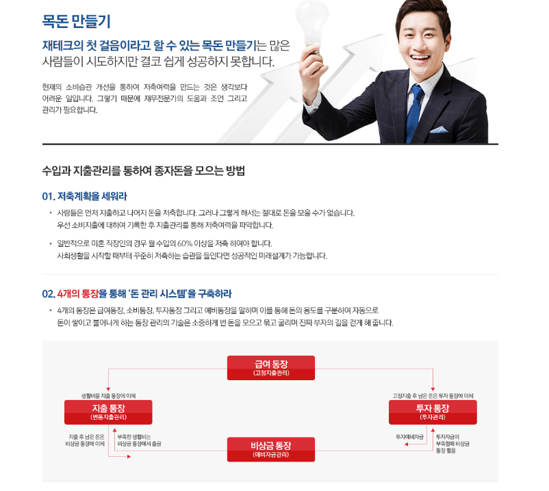
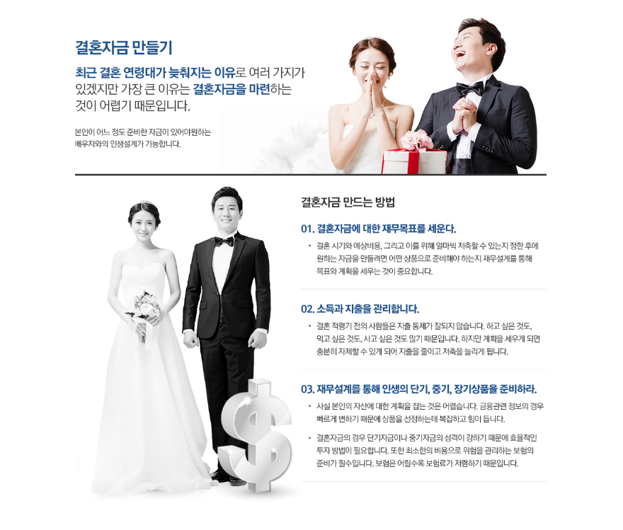
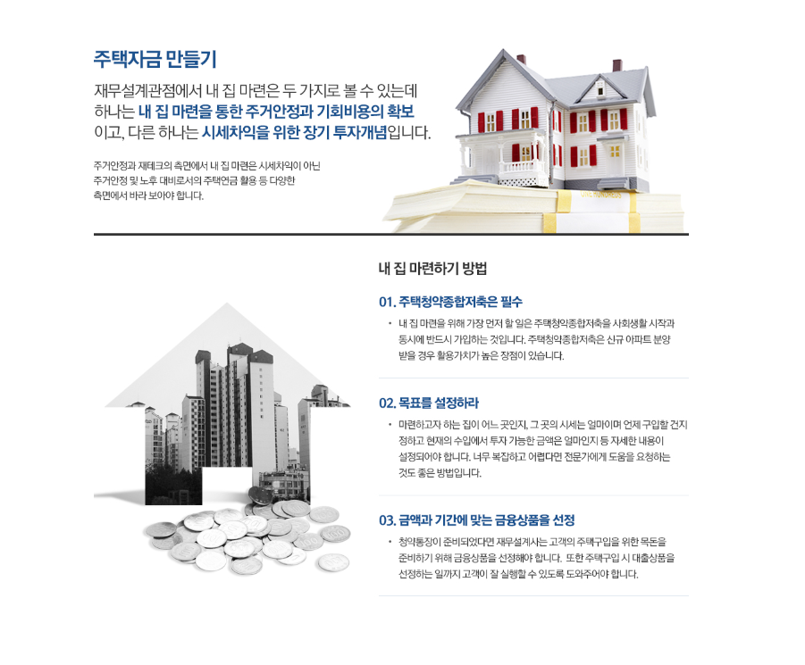
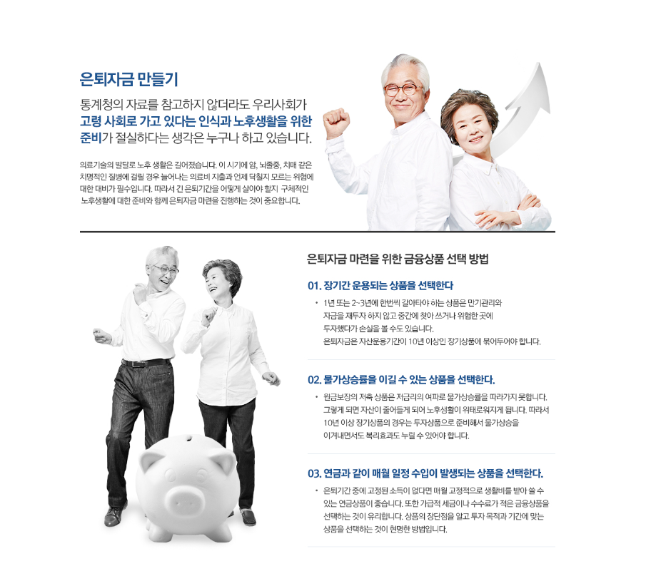

재무설계는 단순히 특정 금융상품을 선택하는 것만을 의미하지 않습니다. 현재의 소득과 지출 구조를 파악하고 보유한 자산과 부채를 확인한 뒤, 앞으로 필요한 자금과 목표를 기준으로 전체적인 재무계획을 점검하는 과정으로 접근하는 것이 좋습니다.
재무설계의 시작은 현재 상황을 정확히 파악하는 것입니다
재무계획을 세우기 전에는 매월 발생하는 소득과 고정지출, 변동지출을 구분해 현재 현금 흐름을 확인하는 것이 중요합니다. 자신의 실제 지출 구조를 알아야 현실적인 계획을 세울 수 있기 때문입니다.
예금과 투자자산뿐 아니라 대출이나 기타 부채까지 함께 정리하면 전체적인 재무상태를 보다 명확하게 파악하는 데 도움이 될 수 있습니다.

단기와 중장기 재무목표를 구분해보세요
사람마다 필요한 자금과 준비해야 하는 시기는 다릅니다. 결혼이나 주거 마련처럼 비교적 가까운 시기에 필요한 자금과 노후 준비처럼 장기간 준비해야 하는 목표를 구분하는 것이 좋습니다.
목표와 필요한 시기를 구체적으로 정리하면 매월 어느 정도를 저축하고 관리해야 하는지 판단하는 데 도움이 될 수 있습니다.

소득 관리
월평균 소득과 추가적인 수입 구조를 확인해보세요.
지출 관리
고정지출과 변동지출을 구분해 현금 흐름을 살펴보세요.
목표 설정
필요한 자금의 목적과 준비 기간을 구체적으로 정리해보세요.
정기 점검
소득과 상황이 변하면 기존 계획도 함께 점검하는 것이 좋습니다.
자산뿐 아니라 부채도 함께 관리하는 것이 중요합니다
재무상황을 점검할 때 보유한 자산만 확인해서는 전체적인 상태를 정확히 파악하기 어렵습니다. 현재 이용 중인 대출의 잔액과 금리, 월 상환액 등을 함께 확인해야 합니다.
특히 여러 금융상품을 이용하고 있다면 각각의 목적과 비용을 점검하고 자신의 소득 수준과 목표에 맞는 구조인지 정기적으로 살펴보는 것이 좋습니다.

재무상담 전 자신의 상황과 목표를 정리해두세요
재무상담을 진행하기 전에 월평균 소득과 지출, 보유한 자산과 대출 현황 등을 미리 정리해두면 현재 상황을 보다 구체적으로 살펴보는 데 도움이 됩니다.
또한 어떤 부분을 가장 개선하고 싶은지, 앞으로 어떤 자금을 준비하고 싶은지를 정리하면 상담 과정에서 필요한 내용을 보다 명확하게 확인할 수 있습니다.
